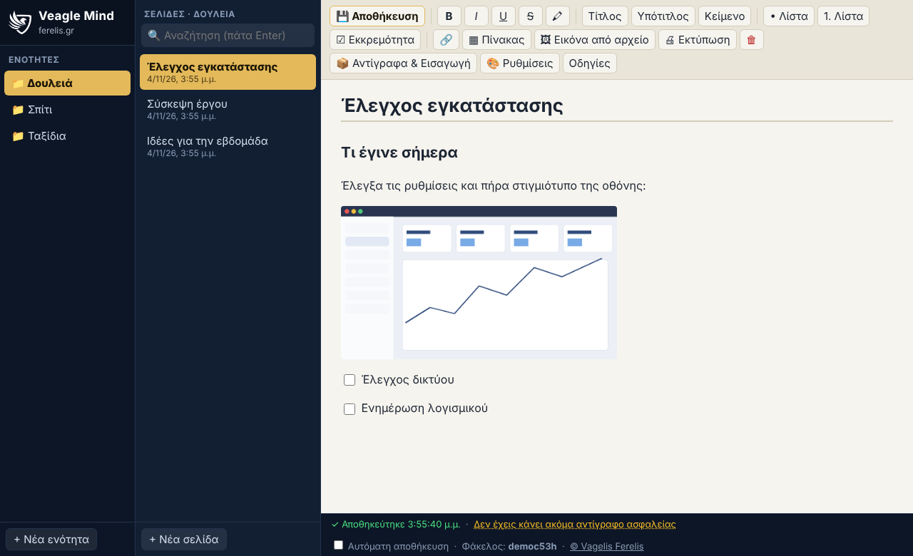
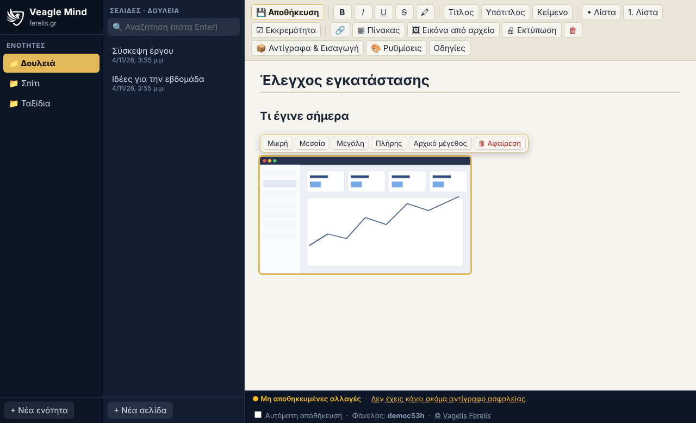
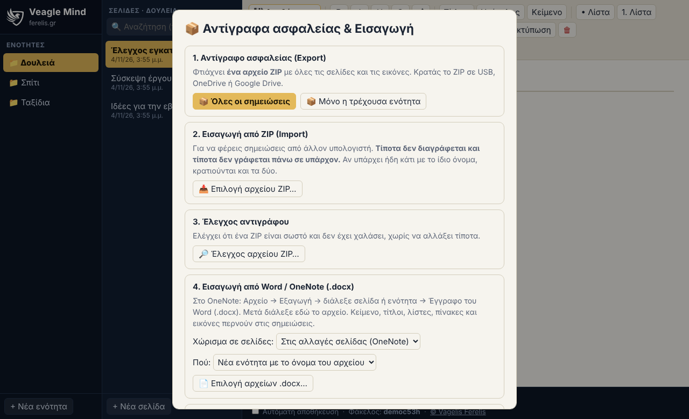

Γράφεις, επικολλάς εικόνες και στιγμιότυπα οθόνης με ένα Ctrl+V, και όλα μένουν σε έναν φάκελο στον υπολογιστή σου. Χωρίς λογαριασμό, χωρίς συνδρομή, χωρίς internet.
Άνοιγμα της εφαρμογήςΟδηγίες εγκατάστασης & χρήσης
Λίγα πράγματα, και όλα να δουλεύουν σωστά.
Πατάς Print Screen (ή Win+Shift+S), πηγαίνεις στη σελίδα και πατάς Ctrl+V. Η εικόνα μπαίνει εκεί που γράφεις. Δουλεύει και με σύρσιμο εικόνων και με εικόνες που αντιγράφεις από άλλα προγράμματα.
Κάθε ενότητα είναι φάκελος, κάθε σελίδα ένα αρχείο .html και κάθε εικόνα ένα αρχείο PNG. Τα ανοίγεις και χωρίς την εφαρμογή, τα αντιγράφεις, τα βάζεις σε OneDrive ή USB.
Ένα κλικ φτιάχνει αντίγραφο όλων των σημειώσεων. Σε άλλον υπολογιστή το εισάγεις χωρίς να χαθεί τίποτα. Υπάρχει και έλεγχος ότι το ZIP είναι σωστό.
Εξάγεις το σημειωματάριο από το OneNote ως .mht (ή ως Word) και το φέρνεις εδώ με μία κίνηση, με κείμενο, λίστες, πίνακες και εικόνες.
Οργάνωσε τα πάντα σε ενότητες και βρες οτιδήποτε με μία αναζήτηση σε όλες τις σελίδες.
Αποθηκεύεις εσύ. Οι διαγραφές πάνε σε φάκελο «_trash». Η εισαγωγή δεν γράφει ποτέ πάνω σε υπάρχοντα αρχεία. Η αυτόματη αποθήκευση είναι προαιρετική.
Έξι χρώματα εφαρμογής και ανοιχτή ή σκούρη σελίδα γραφής. Η επιλογή σου μένει στον υπολογιστή σου και δεν αγγίζει τις σημειώσεις.
Κάνε κλικ πάνω στην εικόνα για να τη μικρύνεις ή να τη μεγαλώσεις. Διπλό κλικ την ανοίγει σε πλήρη οθόνη.


Όλες οι σελίδες και οι εικόνες σε ένα αρχείο.
Αν υπάρχει ήδη κάτι με το ίδιο όνομα, κρατιούνται και τα δύο. Τίποτα δεν χάνεται.
Στο OneNote για Windows: Αρχείο → Εξαγωγή → Notebook → Single File Web Page (.mht). Μετά το διαλέγεις στο Veagle Notes και όλες οι σελίδες περνούν μαζί, με τίτλους, ημερομηνίες, κείμενο, λίστες, πίνακες και εικόνες. Δουλεύει και με αρχεία Word (.docx).
Δεν περνούν: χειρόγραφες σημειώσεις και σχέδια, ήχος και βίντεο, αρχεία επισυναπτόμενα, και η ελεύθερη διάταξη (τα κουτιά κειμένου μπαίνουν σε σειρά). Δείτε τις αναλυτικές οδηγίες.
Για να ξέρεις από την αρχή τι να περιμένεις.
| Ναι | Όχι (προς το παρόν) |
|---|---|
| Λειτουργεί χωρίς internet και χωρίς λογαριασμό | Δεν συγχρονίζεται μόνο του μεταξύ υπολογιστών (βάλε τον φάκελο σε OneDrive ή Google Drive, ή χρησιμοποίησε το ZIP) |
| Τα δεδομένα είναι απλά αρχεία στον δικό σου φάκελο | Δεν υπάρχει χειρόγραφο / στυλό |
| Δουλεύει σε Chrome και Edge (Windows, Mac, Linux) | Δεν δουλεύει σε Firefox και Safari |
| Εικόνες με Ctrl+V, σύρσιμο ή από αρχείο | Δεν έχει κοινή επεξεργασία από πολλούς ταυτόχρονα |
Στον φάκελο που διαλέγεις την πρώτη φορά. Δεν στέλνεται τίποτα πουθενά: η εφαρμογή δεν χρησιμοποιεί internet.
Αν έχεις κάνει αντίγραφο ZIP (ή ο φάκελος είναι σε OneDrive/USB), τα παίρνεις πίσω σε άλλον υπολογιστή με «Εισαγωγή από ZIP». Η εφαρμογή σου θυμίζει πότε έκανες το τελευταίο αντίγραφο.
Όχι. Είναι ένα αρχείο που ανοίγεις με διπλό κλικ στον Chrome ή στον Edge. Δες τις οδηγίες εγκατάστασης για συντόμευση στην επιφάνεια εργασίας.
Ναι. Είναι κανονικά αρχεία .html και ανοίγουν με οποιονδήποτε browser.